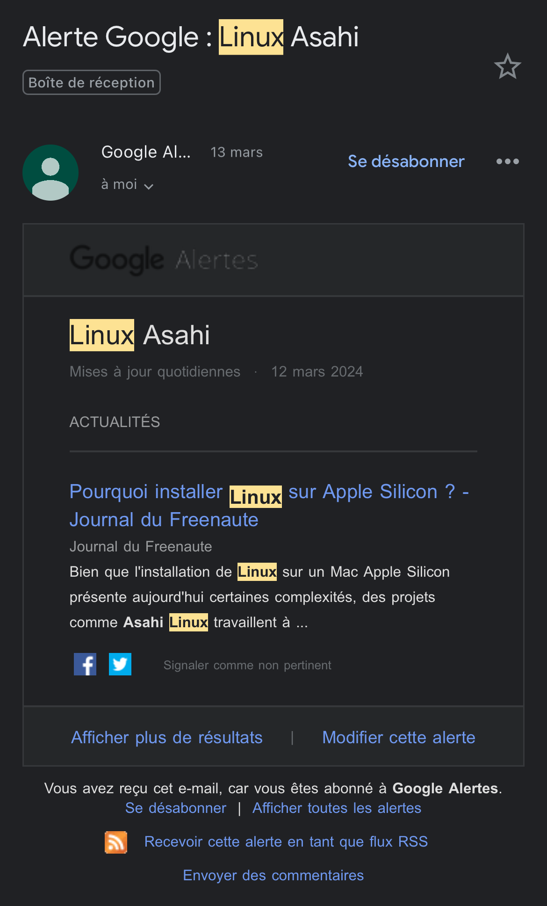

Linux Asahi est un projet, regroupant une communauté et ayant pour objectif de porter Linux sur les Macs Apple Silicon.
Leur Objectif est de le peaufiner au point qu'il puisse être utilisé comme système d'exploitation quotidien.
D'autant plus que Apple Silicon était une plateforme entièrement non documentée,ce qui ajoute un travail considérable :
arriver à coder, de zéro, Linux sur les puces Macs Apple Silicon.
Un outil de la veille technologique a pour utilité de collecter et exploiter un ensemble d’informations. Cet efficacité repose sur plusieurs points:
la maîtrise des sources ainsi que l'analyse des données sont des points essentiels pour toute personne ou entreprise voulant se faire une place dans le monde
de l'informatique, il est donc important de savoir saisir une opportunité quand elle se présente !
Et pour cela j'ai choisi Google Alerts , en entrant les mots clés précis, portant sur les sujets que je veux suivre,
puis en sélectionnant les résultats(blogs, articles,..), il m'est facile de suivre cette avancée, grâce à cet outil qui est relié à mon email GMAIL.
Il m'est alors facile d'accéder à mes résultats via mon téléphone à tout moment de la journée. Un outil de veille portable, sans pour autant perdre en efficacité !

Et OUI ! Il est également possible de me renseigner à propos de Linux Asahi sur le GitHub officiel de ce projet, faisant office de wiki
Il est ainsi possible de suivre les notes de mise à jour "en direct", je dois aller chercher l'information, mais l'avantage majeur de cet outil est que
je n'ai pas besoin d'attendre qu'une source secondaire ou tierce relaie l'information.
GitHub du Wiki de la documentation Officielle de Linux Asahi !
Cela a été fait pour offrir aux uƟlisateurs des Macs Apple Silicon une alternaƟve à macOS et leur permeƩre d'uƟliser Linux comme système d'exploitaƟon principal. Répondre à un besoin : Les processeurs Apple Silicon présentent des spécificités uniques qui nécessitent une distribuƟon Linux adaptée, MacOS, bien que performant peut présenter des limites pour certains uƟlisateurs, Linux Asahi répond à ces besoins spécifiques (flexibilité et possibilités de personnalisaƟon, logiciels spécifiques à Linux, une communauté acƟve).
Compatible avec le matériel des Mac équipés de processeurs Apple Silicon. Il prend en charge les fonctionnalités spécifiques des Mac, telles que la gestion de l'énergie et du Trackpad. Proposition de différents environnements de bureau : GNOME, KDE, etc. Linux Asahi offre également une sélection d’applications préinstallés et un écosystème logiciel riche (développement, design, compilateur, éditeur de code, etc…). L’expérience utilisateur est comparée à celle de macOS.
L'equipe de développement travaille sur le portage de la distribution Asahi, sur les puces Apple Silicone M3